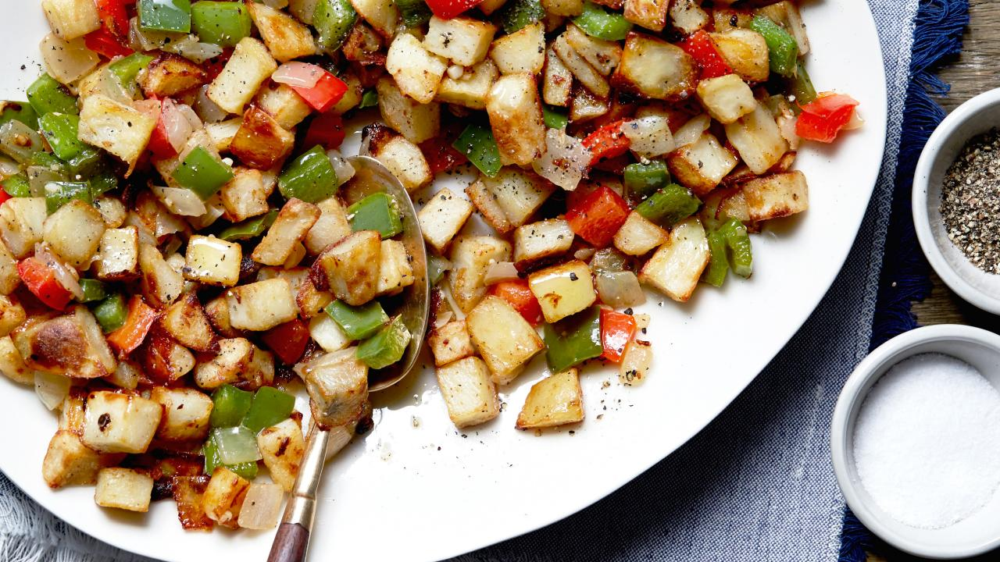

Best Breakfast Potatoes Ever
Ingredients
- 5 pounds red potatoes, roughly chopped/diced
- 4 cloves garlic, minced
- 1 onion, chopped
- 1 green bell pepper, seeded and roughly chopped
- 1 red bell pepper, seeded and roughly chopped
- 1/4 cup olive oil
- 1/2 stick butter, melted
- 1 teaspoon seasoned salt
- 1/2 teaspoon cayenne pepper
- Kosher salt and freshly ground pepper
Directions
- Preheat the oven to 425 degrees F.
- In a large bowl, toss together the potatoes, garlic, onion, green bell pepper, red bell pepper,
olive oil, butter, seasoned salt, cayenne pepper and some kosher salt and pepper.
- Bake for 20 to 25 minutes, shaking the pan twice.
- Raise the heat to 500 degrees and bake until crisp and brown, 10 to 15 minutes.
- Sprinkle with a little more salt and pepper before serving.
footnetwork.com